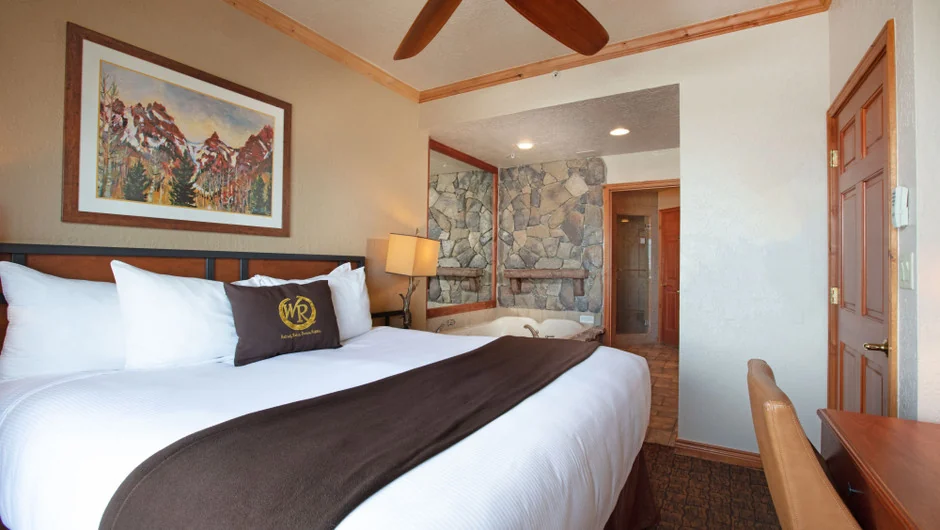

A villa that sleeps eight can mean very different things. Two king bedrooms and two properly opened sleeper sofas is not the same as four actual beds. A breakfast bar that seats four is not equivalent to a dining table that seats eight. This checklist covers what to verify before booking a Park City ski villa for a group of eight, so the week matches what the listing described.

How the eight actually sleep
The first thing to check is the bed breakdown: how many are proper beds and how many are sleeper sofas. The two have different implications for who sleeps where, particularly when the group includes couples expecting a king bed rather than a pull-out arrangement.
In a two-bedroom villa, eight guests typically means two king beds and two queen sleeper sofas — one per living area if the villa has a lock-off studio. That is a reasonable arrangement for two couples plus four adults comfortable with sofa beds, but different from a four-bedroom property with eight actual beds.
Ask the owner or listing for the bed type in every room: not just the bedroom count. For a detailed look at what is inside a Westgate two-bedroom villa, our guide on what you get in the Westgate two-bedroom unit shows the full room inventory. For a broader comparison, our villa vs hotel rooms guide covers the trade-offs.
Bathrooms: how many, what kind
Two bathrooms for eight people is a meaningful bottleneck on a ski trip, where everyone tends to move on the same morning schedule: up at 7, on the mountain by 9, back in the afternoon, cleaned up for dinner. The bathroom count is not a dealbreaker for most groups, but it is worth knowing before the first morning rather than discovering it at 7 am.
What matters alongside the count is the configuration. Walk-in showers in both bathrooms work better for the morning rush than a shower-and-tub split in one bathroom.
Kitchen and dining capacity for eight
A kitchen in a villa listing covers a wide range of actual equipment. At the minimum it is a small refrigerator, microwave and coffee maker — which is a kitchenette, not a kitchen. For a group of eight, the difference between a full kitchen and a kitchenette matters every night of the week.
A full kitchen for eight should include: a full-size refrigerator with enough storage for a weekly shop, an oven and stovetop with at least four burners, a dishwasher and enough crockery, glassware and cookware to prepare and serve a group meal. The absence of any of these becomes a problem at some point in the week.
The dining table is as important as the kitchen equipment. A breakfast bar that seats four or five does not seat eight for dinner. Confirm the table seats the full group before booking, not after arriving with groceries.

Ski access and gear storage
Slopeside at Canyons Village means a short walk in ski boots, not door-to-snow access, so the practical question is: how is the morning sequence managed? Moving eight people to the gondola in ski boots with helmets and poles depends on where the building sits and what the villa offers for gear storage.
What to look for: a space to store eight ski boot sets left warm overnight, a rack for eight pairs of skis and poles, and clear access to the building's ski locker if one exists. Gear left in a cold car is uncomfortable and slow to put on the next morning.
Our guide on the actual walk from Westgate to the lifts covers distances and times. The key point for a group of eight: eight people leaving together dressed, booted and carrying gear takes longer than the walk itself.
Common areas and what happens after day two
By day two, the common areas become as important as the bedrooms. Eight people in a villa with one small sofa and a dining table that seats six find ways to split across rooms in ways that undermine the reason for being in a villa rather than separate hotel rooms.
Look for enough sofa seating for all eight in the main living area, and a second living space if the group runs on different schedules. A lock-off studio gives a second front door and a second living area, so two branches of the group can share a villa without occupying the same space.
For more on how two groups share a villa, our multi-family ski trip guide covers how the layout works across a week. See also the full property layout on the homepage.
What to verify before you transfer a deposit
These are the checks worth making before money moves, in order of consequence.
| Item | What to ask | Why it matters |
|---|---|---|
| Bed breakdown | Type and size of every sleeping position | Sofas vs beds is a real distinction for eight adults |
| All-in total | Nightly rate + resort fee + village assessment + cleaning fee | Total is the only figure that lets you compare options |
| Check-in age | Confirm the lead guest meets the minimum age | Westgate requires the check-in guest to be 21 or older |
| Cancellation terms | Full refund window and partial refund thresholds | Presidents' Week and spring break weeks book months ahead |
| Dining table seats | Confirm the table seats the full party | A breakfast bar does not substitute for a full table |
| Ski gear storage | Boot warmers or gear room, locker access | Gear left cold overnight slows the whole group next morning |
For a direct booking, the signed rental agreement should cover dates, all-in total, payment schedule and cancellation terms. Our guide to booking the villa direct from the owner covers what that agreement should include. Our resort fees guide explains what the resort fee and village assessment cover.
The villa this checklist is about
We own three Premier Two-Bedroom Villas inside Westgate Park City Resort, in Canyons Village. Each is 1,100 square feet — two king bedrooms, two queen sleeper sofas, sleeping eight — with a full kitchen, a kitchenette in the lock-off studio and two bathrooms with walk-in showers. The dining table seats eight, there are two separate living areas, and two front doors.
We rent directly, owner to renter. No platform fee, no agency layer. Our open weeks for 2027 are Presidents' Week, 13 to 20 February, and spring break, 21 to 28 March. One enquiry, one person who answers it.
Common questions
How many beds is 'sleeps 8' in a Park City ski villa?
It varies. A two-bedroom villa that sleeps 8 typically provides two king beds and two queen sleeper sofas — the sofas covering the fourth and fifth sleeping positions, with two more from each sofa when opened. A four-bedroom villa sleeping 8 typically provides eight beds across four rooms. Always ask for the exact bed type in each room, since four sofa beds is a very different arrangement from four proper beds.
What kitchen equipment should a Park City villa that sleeps 8 have?
A full-size refrigerator, an oven and stovetop with enough burners for a group meal, a dishwasher, and enough crockery and cookware to serve eight at the table. A proper dining table that seats eight is as important as the cooking equipment — a breakfast bar that seats four is not equivalent. For a week-long stay, the kitchen is used enough that gaps in the inventory matter.
What is a lock-off studio in a two-bedroom ski villa?
A lock-off studio is a self-contained section of the villa that can function independently, with its own entry, sleeping area, bathroom and kitchenette. In a two-bedroom villa with a lock-off, the studio side has a separate front door from the main unit. Two couples or two family branches can occupy the villa while maintaining their own private space — the door between the two sides locks from either end.
What is the minimum check-in age for a villa at Westgate Park City?
The person checking in at Westgate Park City must be 21 or older. This applies regardless of how the booking is arranged. Confirm with the specific owner or agency before booking if the lead guest is under 21, as the resort enforces this at check-in.
How much shared living space should a villa for eight actually have?
Enough for all eight people to sit comfortably at once — in a sofa arrangement for an evening in and around a dining table for a group meal. For a seven-night stay, the common areas are used far more than the bedrooms during waking hours. A villa with two separate living areas gives additional flexibility, particularly for mixed-schedule groups.